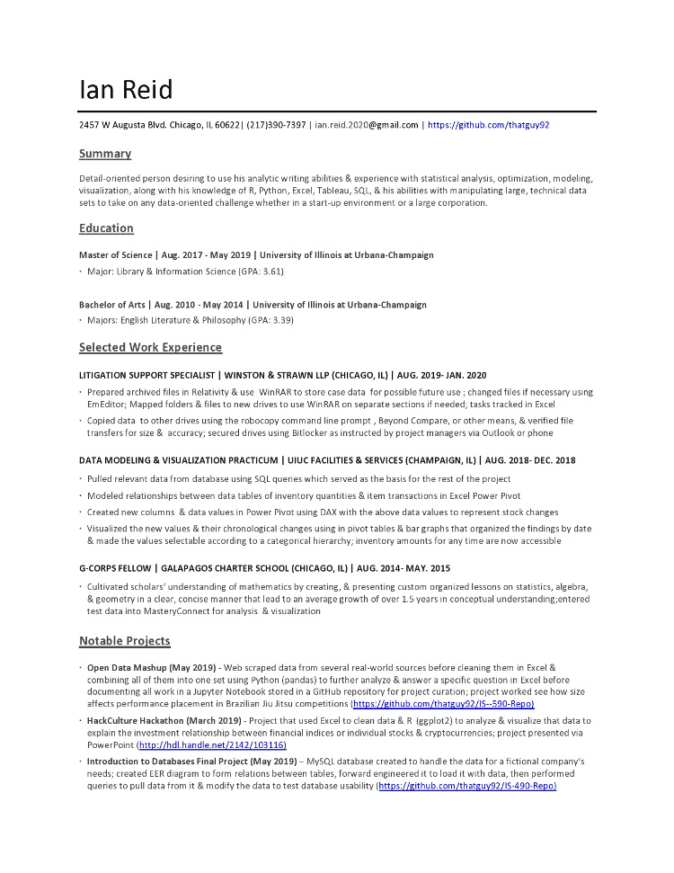

Home
This is a simple website template published with Github Pages customized by Ian Reid to develop his skills with HTML, Javascript, and CSS. Fork this repository to create your own site!
About
Ian is a detail-oriented person desiring to use his analytic abilities and experience with clustering analysis, optimization, modeling, visualization, and regression-based analysis along with his knowledge of R, Python, and SQL, his abilities with manipulating large technical data sets, and his skills using Microsoft Office Suite to take on any challenge whether in a start-up environment or a large corporation.
Contact
Cell: 217-390-7397
Email: thatianreidguy@gmail.com
Resume
